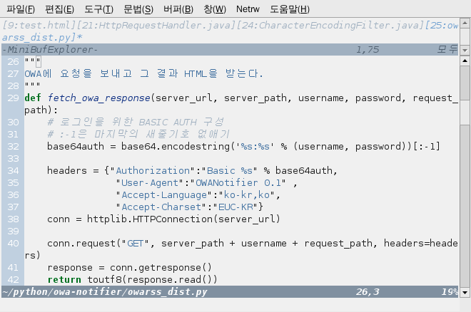
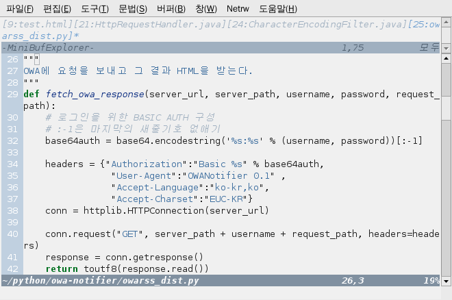

하얀 바탕에 까만글씨는 살짝 눈이부셔 피로하고, 까만 바탕에 흰글씨는 가독성이 떨어져서 오히려 하얀 바탕보다 더 피로하고... 해서 짜증 났었는데.. 간만에 맘에 드는 Vim 컬러 스킴을 찾았다.
근데, 알고보니 원래 Vim 싸이트에서도 제일 인기 있는 컬러스킴이었구만..
pyte color scheme

DejaVu Sans Mono 영문글꼴 + 네이버 사전체 한글 글꼴 + pyte color scheme 맘에들어~!
언제 또 심심할 때 Vim Color Scheme Test 싸이트에서 몇 개 보고 직접 붙여서 확인해봐야지.
근데, 알고보니 원래 Vim 싸이트에서도 제일 인기 있는 컬러스킴이었구만..
pyte color scheme

DejaVu Sans Mono 영문글꼴 + 네이버 사전체 한글 글꼴 + pyte color scheme 맘에들어~!
언제 또 심심할 때 Vim Color Scheme Test 싸이트에서 몇 개 보고 직접 붙여서 확인해봐야지.